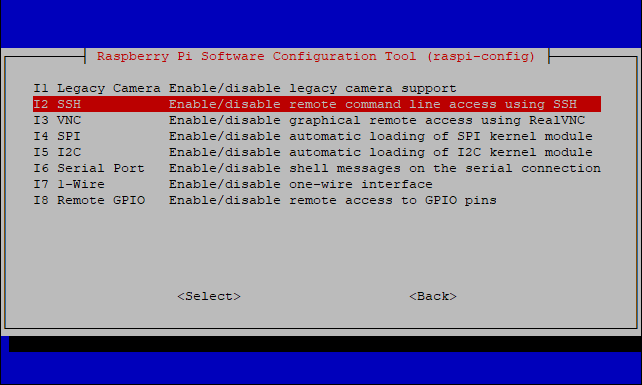
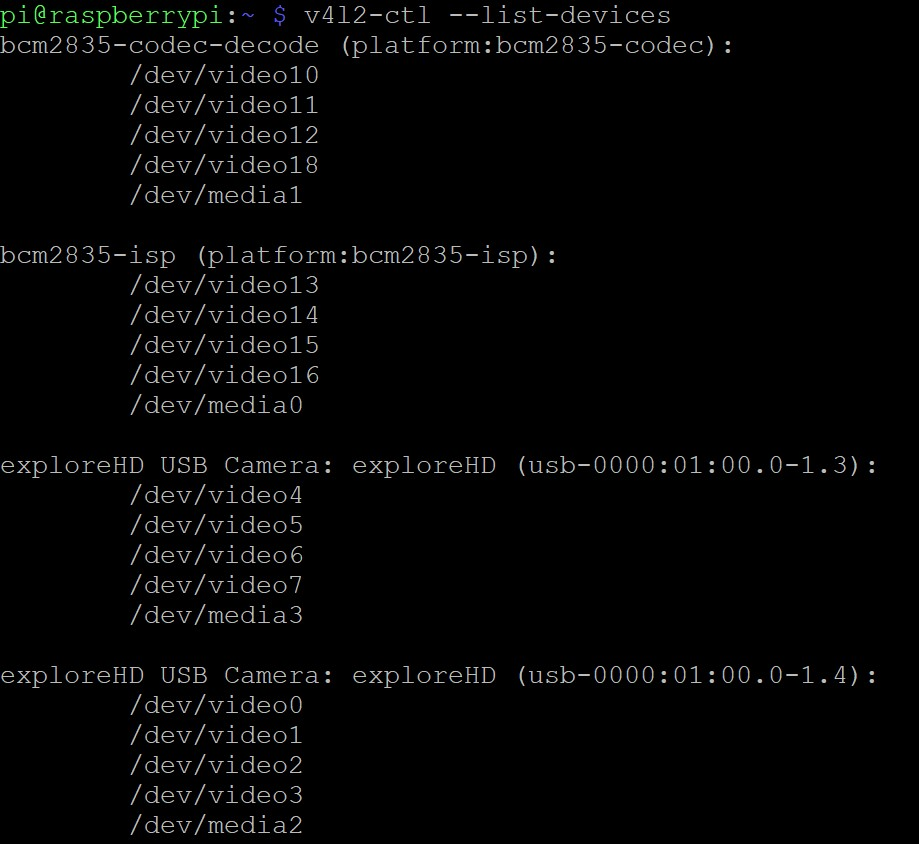

Raspberry Pi Streaming Setup for exploreHD#
Important
If you are plugging your Vehicle/Raspberry Pi/Other Device directly into your laptop via an ethernet cable/adapter/dongle, please see the PC Network Setup Guide first.
Note
The following instructions are for if you want to set up streaming from a Raspberry Pi without ArduSub. If you want plug-and-play compatibility we recommend following this guide for installing BlueOS alongside our software.
These instructions are mostly for MATE ROV teams who want the ability to stream multiple exploreHDs easily, yet retain the ability to use their own flight controller!

Setup#
Important
If you are plugging your Vehicle/Raspberry Pi/Other Device directly into your laptop via an ethernet cable/adapter/dongle, please see the PC Network Setup Guide first.
Initial Setup
Step 1: Flashing the Raspberry Pi
Download and run the Raspberry Pi Imager from the official Raspberry Pi website
If you haven’t already, insert the SD card into your computer
Select Raspberry Pi OS (32-bit) for the Operating System and the SD card you inserted as the SD card.
Select
Writeto begin flashing the Operating System to the SD card
Step 2: Powering
Plug in a compatible HDMI cable and monitor to the Pi
Connect a USB keyboard and mouse to the Pi
Power the Pi using a micro usb or usb c power adapter depending on the version of Raspberry Pi you are using
Important
Ensure you power the Pi after plugging the monitor into the Pi and wall power, otherwise, the Pi will not recognize the display and you will have to power cycle the device.
Step 3: Perform the Initial Setup
Setup the Pi with the GUI provided at start
Ensure WiFi is connected as soon as possible
Warning
Make sure you select the US Keyboard layout or some keys will not be recognized properly.
Step 4: Set Static IP
Edit dhcpcd.conf -
sudo nano /etc/dhcpcd.confAdd:
interface eth0
static ip_address=192.168.2.2/24
to the end of the file
Save and close the file with
ctrl-o,enter, and thenctrl-x
Step 5: Connect to a Laptop
Plug in an ethernet cable into the Raspberry Pi with the other end connected to a Windows or Linux laptop or PC
Enable ssh on the pi
Enabling SSH on the Raspberry Pi
Run sudo raspi-config

Select Interface Options and press enter

Note
Use the arrow keys to navigate the menu up and down
Under Interface Options, Select SSH

Select yes and press enter

Reboot the pi with:
sudo reboot
SSH into the Pi
This guide describes how to connect to a Raspberry Pi over a secure ssh connection. It is expected the Raspberry Pi is connected over ethernet and has the IP 192.168.2.2, which is standard for most ROVs.
:::{dropdown} Windows
For Windows, we recommend using Putty, which can be downloaded [here](https://www.putty.org/)
* After installing, open Putty and type the address of the Raspberry Pi (which should be set to 192.168.2.2 if you are following {doc}`Our Guide <./pi_setup>`)
* Keep the other settings as default and click the `Open` button

* After connecting you will be prompted with a *security alert*. Ensure you select **accept**.

* To log in, use the following credentials: username: `pi`, password: `raspberry`
* You will be greeted with a terminal
:::
:::{dropdown} Linux/Mac
First, open your terminal app.
```{note}
If using Linux, this will depend on your distribution. On MacOS, you can open spotlight and type: `Terminal`.
The general format for ssh on unix is:
ssh -p port user@IP-Address
Enter the following command:
ssh -p 22 pi@192.168.2.2
The password will be raspberry by default.
Note
At this point, you can disconnect the USB keyboard, mouse, and monitor from the Raspberry Pi.
Installation Instructions
Step 1: Update the Pi
sudo apt-get update
sudo apt-get upgrade
sudo apt full-upgrade
Note
This process may take a while
Step 2: Install the Latest Version of GStreamer
Remove the included version of GStreamer:
sudo apt-get remove libgstreamer* gstreamer1.0*
Install GStreamer:
sudo apt-get install gstreamer1.0-tools gstreamer1.0-x gstreamer1.0-plugins-base gstreamer1.0-plugins-good gstreamer1.0-plugins-bad gstreamer1.0-libav
Step 3: Plug in the Camera
If you haven’t already, connect an exploreHD or HDCam to an available USB port on the Raspberry Pi
Streaming#
Automatic Stream Setup
For automatic, plug and play of the stream to work on the Raspberry Pi, use DWE OS. This system will automatically run at startup and saves the settings automatically. It supports UDP stream and H264 compression settings.

Manual Stream Setup
Important
It is not recommended to use the following instructions unless customizability is required. Please use DWE OS when possible to minimize issues or compatibility concerns.
Step 1: Finding the device
v4l2-ctl --list-devices

Look for device: exploreHD USB Camera: exploreHD
Note
In this example, we have 2 exploreHDs connected so it shows up twice.
You can ignore /dev/media*
The different video numbers in each section represent the different encoding format. Typically the third one on the list is for H264 (in the above example video6 and video2 are H264 formats). Keep those in mind for the next step. The video number won’t change as long as the USB device doesn’t get unplugged even when you reboot the Pi.
Note
If you are unsure the device number you selected is ‘H264’ format, you can run v4l2-ctl --list-formats --device * to find out. (replace * with the device number)
Step 2: Streaming in H264
On the Raspberry Pi, run:
gst-launch-1.0 -v v4l2src device=/dev/video* ! video/x-h264, width=1920,height=1080! h264parse ! queue ! rtph264pay config-interval=10 pt=96 ! udpsink host=192.168.2.1 port=5600 sync=false
Note
In this example, host=192.168.2.1 due to the expected setup in Receiving regarding Windows Setup. If that specific setup cannot be followed you may replace this with the local IP of your device.
Note
Replace the * in device=/dev/video* with the video device number seen in the previous step.
To stream more than one exploreHD at the same time, you can add an & to the code and run another one with the respective video device and port number.
You can make this command autorun to make your ROV camera streaming system!
Receiving#
The simplest and most reliable method of viewing multiple high-quality and lowest latency is using our software, Discovery!.
To learn more, see our Discovery quickstart guide –>